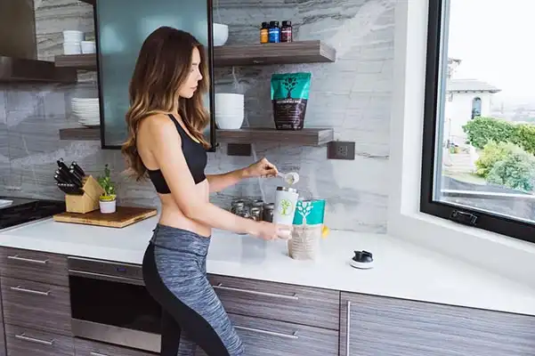
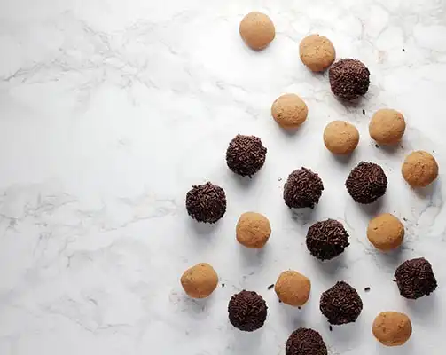
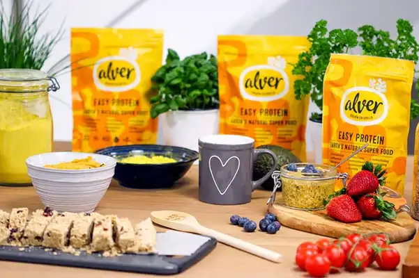
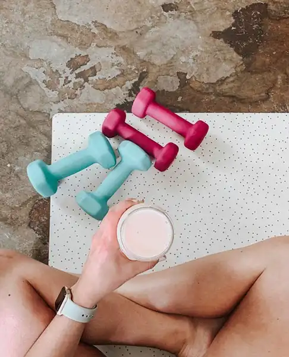

Актуальность бизнес-идеи
Спрос на здоровое питание сформирован давно, а вот предложение не всегда соответствует ожиданиям. Особенно, если дело касается простых и полезных перекусов. Протеиновое печенье, маффины без сахара и полезные батончики — вот рецепты, которые пользуются популярностью у адептов здорового питания.

Затраты и прибыль
Начните проект с демо-версии производства: не полноценный цех, а собственная кухня; не профессиональное оборудование, а бытовая техника. Экономия на старте поможет избежать рисков. В таком формате расходы на старте будут минимальны — 38’000 рублей. С учетом отсутствия необходимости в найме персонала и аренде помещения под цех, выйти на окупаемость получится быстрее. Окупить вложения за 2 месяца реально при прибыли в 20’000 рублей.
Затраты на старте: примерный расчет для Самары
- Регистрация бизнеса - 1’000 ₽
- Оборудование - 10’000 ₽
- Закупка продуктов - 20’000 ₽
- Непредвиденные расходы - 5’000 ₽
- Дизайн и печать визиток - 2’000 ₽
Ежемесячные затраты
- Продукты - 20’000 ₽
- Реклама - 5’000 ₽
- Курьерская доставка - 5’000 ₽
Разрешения и документы
Регистрация бизнеса
Для запуска небольшого производства достаточно оформить ИП. Подготовьте заявление, снимите копию паспорта и оплатите госпошлину. На регистрацию уйдет не больше трех рабочих дней, на открытие счета в банке — до двух недель.
Выбор помещения
Поскольку в условиях ограниченности ресурсов оценить спрос будет весьма трудно, лучше сэкономить на вложениях и текущих расходах и вместо аренды полноценного цеха обустроить под производство собственную кухню.

Оборудование
Вне зависимости от типа конечного продукта производство состоит из нескольких этапов:
- Подготовка и измельчение ингредиентов
- Формовка
- Выпечка или заморозка
- Упаковка готового продукта
При этом необходимое оборудование уже есть на вашей кухне: холодильник с морозильной камерой, плита с духовкой, блендер. Если чего-то не хватает, то можно докупить. Ориентировочная сумма затрат, включая покупку формочек и посуды, составит 10’000 рублей.
Как выбрать поставщика
Для начала составьте меню и поэкспериментируйте с рецептами. Это поможет вам определиться с ингредиентами и прикинуть их расход. Например:
- Протеиновое печенье — казеиновый протеин, овсяные хлопья, яичный белок, сахар или сахарозаменитель
- Маффины без сахара — бананы, овсяные хлопья, яйца, шоколад, финики, соль, корица, разрыхлитель
- Полезные батончики — овсяные хлопья, миндаль, несладкая кокосовая стружка, фисташки, кунжут, оливковое масло, грецкие орехи, мед, ванильный экстракт, черный шоколад, семена подсолнечника, семена льна, соль, тростниковый сахар, сухофрукты, бананы, мускатный орех

Позиции меню, а также ингредиенты для каждой позиции могут меняться в зависимости от вкусов клиентов. Например, если вы ориентированы только на здоровое питание, то придется исключить даже тростниковый сахар. Затраты на продукты начинаются от 20’000 рублей в месяц, в эту же сумму входит фольга, бумага для выпечки и другие текущие материалы.
Персонал
На данном этапе проект не нуждается в найме сотрудников. Собственник бизнеса закупает ингредиенты, готовит продукцию и налаживает сотрудничество с точками сбыта самостоятельно. Для начинающего предпринимателя это отличный способ погрузиться в бизнес-процессы. оценить спрос на продукцию, избежав при этом дополнительных затрат на персонал.
Конечно, с ростом спроса потребуется обустроить отдельный производственный цех, нанять сотрудников и дополнительно подключить маркетолога. Но на этапе становления проекта лучше обойтись собственными силами.
Как рекламировать бизнес
Важна не реклама, а налаженные контакты с посредниками, например, тренажерными залами, фитнес-центрами, клубами здорового питания, кафе при спортивных центрах. Предложите свои услуги и в случае интереса заключите договора на поставку.

Плюсы и минусы бизнес-идеи
Плюсы:
- Минимальные вложения на старте
- Минимум текущих затрат
- Перспективы для роста и развития
Минусы:
- Риски сотрудничества
- Долгий выход на необходимые обороты
- Развитие проекта упирается в существенные расходы
Производство полезных перекусов для строго сегментированной аудитории — тот самый пример бизнеса, в котором можно стартовать без особых вложений и с минимальными рисками. Успех проекта зависит от интереса к вашей продукции. Желаем вам удачи!